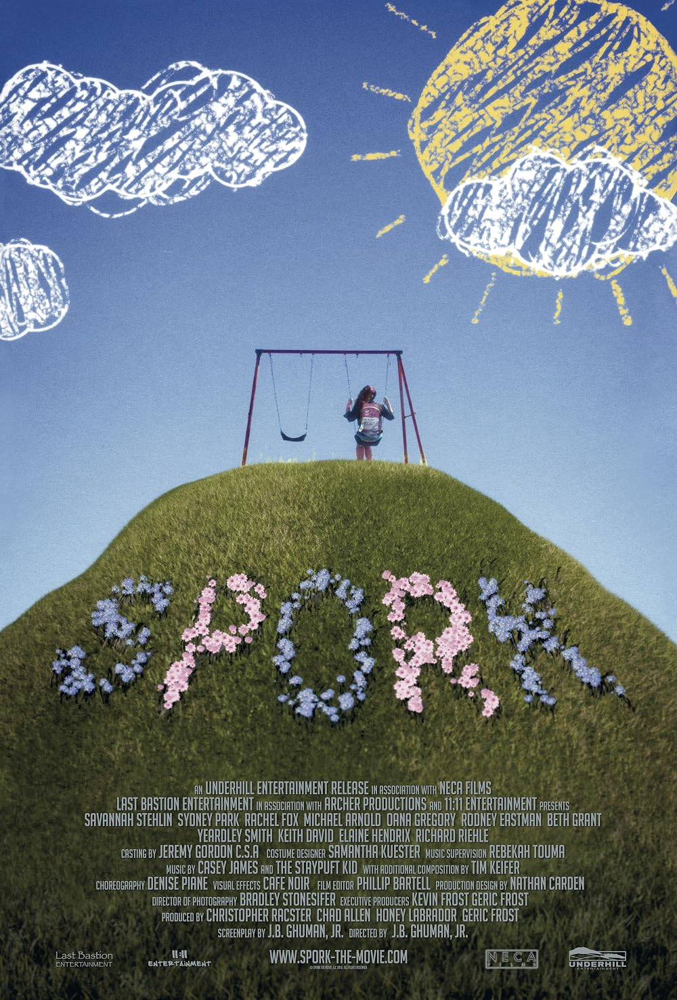

← Back
Spork
Director
J.B. Ghuman Jr.Production Company
Neca Films; Last Bastion Entertainment; Bent FilmLead Actors
Notable Festivals
Tribeca Film Festival '10 (Cinemania)
Logline
SPORK is a feature film about an adolescent “inter-sexed” kid who identifies as a female. Not a spoon. Not a fork. Spork! A dark musical comedy aimed at self love and acceptance.
Press
Watch NowGallery



Selects